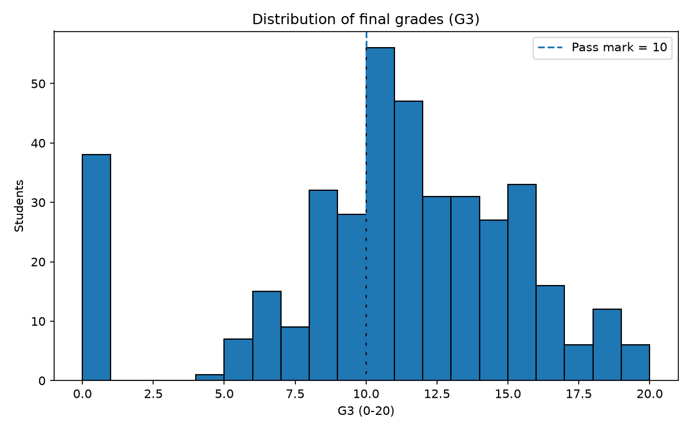
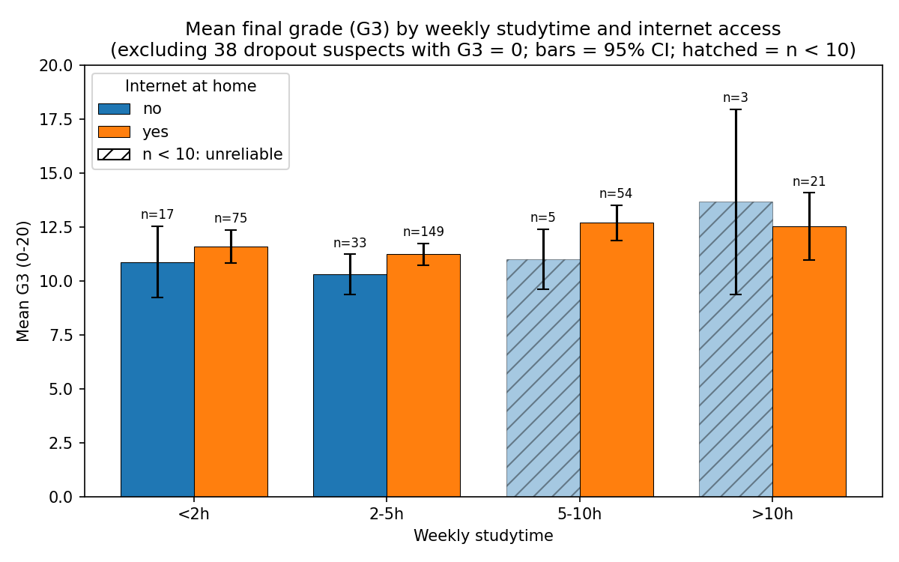
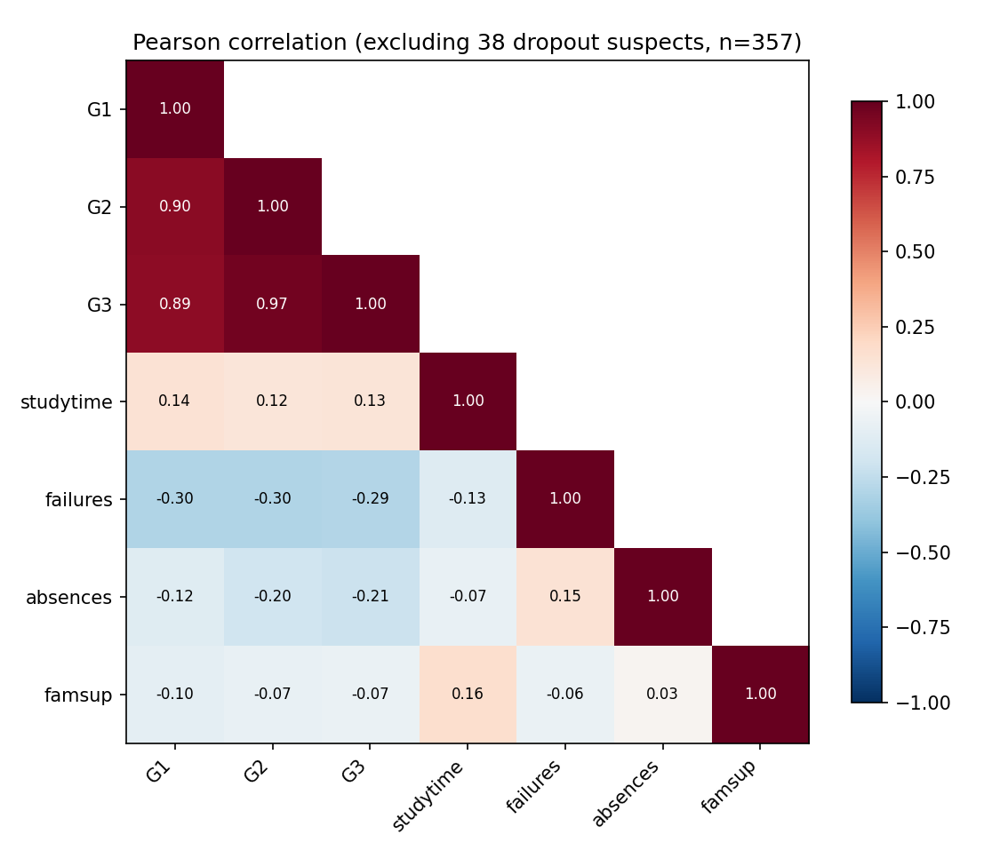

Đồ án P1 · Lĩnh vực Giáo dục
Dữ liệu UCI Student Performance (hai trường THPT tại Bồ Đào Nha, năm học 2005–2006), kết hợp dữ liệu tham chiếu PISA thu thập từ Wikipedia và đối chiếu với báo cáo chính thức của OECD.
Phần 1 · Bài toán
Nhà trường cần nhận diện sớm những học sinh có nguy cơ không đạt môn để hỗ trợ kịp thời, thay vì chỉ biết kết quả sau kỳ thi cuối năm.
Những yếu tố như thời gian tự học, số buổi vắng, hỗ trợ từ gia đình và điểm giữa kỳ (G1, G2) liên quan như thế nào đến điểm cuối kỳ (G3)?
studytime, absences, failures, internet.student-mat.csv, 395 học sinh): đối tượng phân tích chính.student-por.csv, 649 học sinh): dùng để kiểm chứng quy tắc phân nhóm rủi ro trên học sinh mới.Dữ liệu là dữ liệu quan sát, cắt ngang (một năm học, hai trường). Các kết quả được trình bày là mối liên hệ, không phải quan hệ nhân quả.
Nội dung trình bày
Trình tự bám theo quy trình khoa học dữ liệu trong đề bài: thu thập → làm sạch → khám phá → kiểm định → ứng dụng → kết luận.
Phần 2 · Dữ liệu
Ba nguồn dữ liệu, mỗi nguồn có vai trò riêng. Toàn bộ quy trình chạy bằng một lệnh python main.py.
| Nguồn | Nội dung | Cách thu thập | Lưu tại (dữ liệu thô) | Vai trò |
|---|---|---|---|---|
| UCI Student Performance | 2 file CSV (Toán, Bồ Đào Nha) + file mô tả thuộc tính | Tải student.zip qua HTTP, giải nén trong bộ nhớ (fetch_uci_raw) | data/raw/student-mat.csvdata/raw/student-por.csv | Dữ liệu phân tích chính |
| Wikipedia – bài PISA | Bảng xếp hạng PISA 2000–2025, 3 môn (Toán, Khoa học, Đọc hiểu) | Cào HTML bằng requests + BeautifulSoup, có cache (scrape_pisa_table) | data/raw/pisa_reference.csv+ .meta.json (revision) | Bối cảnh quốc gia |
| OECD – PISA 2025, Table I.1 | Điểm chính thức 2025 và mức thay đổi so với 2022 | Chép từ báo cáo PDF chính thức (giấy phép CC BY 4.0) | data/raw/oecd_pisa2025_table_I1.csv | Đối chiếu độ chính xác của dữ liệu cào |
main.py và lớp StudentDataProcessorcleaned_students*.csv, pisa_clean.csv, summary.jsonPhần 2 · Dữ liệu
Cả hai hàm đều chỉ gọi mạng khi cần, nên kết quả chạy lại được ngoại tuyến và cho cùng một con số.
def fetch_uci_raw(raw_dir: Path, url: str = UCI_ZIP_URL) -> list[Path]:
"""Download UCI student.zip and extract raw files if any are missing."""
raw_dir = Path(raw_dir)
targets = [raw_dir / name for name in UCI_FILES]
if all(p.exists() for p in targets):
return targets
raw_dir.mkdir(parents=True, exist_ok=True)
resp = requests.get(url, timeout=60, headers=HTTP_HEADERS)
resp.raise_for_status()
with zipfile.ZipFile(io.BytesIO(resp.content)) as outer:
with zipfile.ZipFile(io.BytesIO(outer.read("student.zip"))) as inner:
for name in UCI_FILES:
(raw_dir / name).write_bytes(inner.read(name))
return targetscache = Path(out_csv) if out_csv is not None else None
if cache is not None and cache.exists() and not refresh:
return _read_pisa_cache(cache) # đọc cache + validate lại
try:
resp = requests.get(url, timeout=25, headers=HTTP_HEADERS)
resp.raise_for_status()
resp.encoding = "utf-8"
df = _parse_pisa_html(resp.text) # BeautifulSoup
validate_pisa_raw(df) # kiểm tra bảng cào
except Exception as exc:
if cache is not None and cache.exists():
warnings.warn(...) # lỗi: giữ cache cũ
return _read_pisa_cache(cache)
raise RuntimeError(...) from excKhai báo User-Agent gồm tên công cụ và đường dẫn repo theo chính sách của Wikimedia; mỗi lần cào chỉ 1 request; có timeout.
Bảng tóm tắt 2025 (274 dòng) và bảng so sánh lịch sử 2000–2022 (2068 dòng, chuyển từ dạng rộng sang dạng dài) → 2342 dòng thô.
validate_pisa_raw: đủ 3 môn, năm hợp lệ, điểm trong 200–700, ≥ 30 nước mỗi bảng, đúng 1 dòng trung bình OECD. Lưu revision Wikipedia 1378067005.
Phần 2 · Dữ liệu
Mỗi dòng là một học sinh trong một môn học. Hai file có cùng 33 cột, phân cách bằng dấu chấm phẩy, thang điểm 0–20.
| File | Số dòng | Số cột | Môn | Vai trò trong đồ án |
|---|---|---|---|---|
student-mat.csv | 395 | 33 | Toán | Phân tích chính |
student-por.csv | 649 | 33 | Bồ Đào Nha | Kiểm chứng quy tắc rủi ro |
| Tổng | 1044 | Ghép lại, thêm cột subject | ||
Biến mục tiêu: G3 – điểm cuối năm (0–20); đỗ khi G3 ≥ 10. G1, G2 là điểm giai đoạn 1 và 2, có trước kỳ thi cuối.
Hai file không độc lập: theo mô tả của UCI, 382 học sinh có mặt ở cả hai môn. So khớp 13 cột định danh (như student-merge.R), 374/649 dòng môn Bồ Đào Nha trùng với học sinh môn Toán.
school;sex;age;address;famsize;Pstatus;Medu;Fedu;Mjob;
Fjob;reason;guardian;traveltime;studytime;failures;
schoolsup;famsup;paid;activities;nursery;higher;internet;
romantic;famrel;freetime;goout;Dalc;Walc;health;absences;
G1;G2;G3
"GP";"F";18;"U";"GT3";"A";4;4;"at_home";"teacher";
"course";"mother";2;2;0;"yes";"no";"no";"no";"yes";"yes";
"no";"no";4;3;4;1;1;3;6;"5";"6";6G1, G2 nằm trong dấu nháy ("5"), còn G3 thì không (6).dtype=str) rồi tự ép kiểu có kiểm tra, thay vì để pandas tự suy luận kiểu.Phần 2 · Dữ liệu
Miền giá trị lấy từ file mô tả gốc student.txt; đây cũng là căn cứ cho bước kiểm tra miền giá trị khi làm sạch.
| Thuộc tính | Kiểu dữ liệu | Miền giá trị / ý nghĩa |
|---|---|---|
| Nhóm 1 · Cá nhân và trường học | ||
school, sex, address, famsize, Pstatus | Nhị phân | GP/MS · F/M · U (thành thị)/R (nông thôn) · LE3/GT3 (≤ 3 / > 3 người) · T (bố mẹ sống chung)/A |
age | Số nguyên | 15–22 tuổi |
| Nhóm 2 · Gia đình | ||
Medu, Fedu | Thứ bậc 0–4 | Học vấn của mẹ/bố: 0 không đi học, 1 tiểu học, 2 lớp 5–9, 3 THPT, 4 đại học |
Mjob, Fjob, guardian, reason | Định danh | Nghề mẹ/bố (teacher, health, services, at_home, other) · người giám hộ · lý do chọn trường |
| Nhóm 3 · Học tập và hỗ trợ | ||
studytime | Thứ bậc 1–4 | Thời gian tự học mỗi tuần: 1 (< 2h), 2 (2–5h), 3 (5–10h), 4 (> 10h) |
failures | Số nguyên 0–3 | Số lần trượt môn trước đây |
schoolsup, famsup, paid, higher, internet | Nhị phân yes/no | Phụ đạo ở trường · gia đình hỗ trợ học · học thêm có trả phí · muốn học đại học · có internet ở nhà |
| Nhóm 4 · Đời sống, quan hệ, sức khoẻ | ||
activities, nursery, romantic | Nhị phân yes/no | Hoạt động ngoại khoá · từng học mẫu giáo · có quan hệ tình cảm |
famrel, freetime, goout, Dalc, Walc, health | Thứ bậc 1–5 | Quan hệ gia đình · thời gian rảnh · đi chơi · uống rượu ngày thường/cuối tuần · sức khoẻ (1 rất thấp … 5 rất cao) |
traveltime | Thứ bậc 1–4 | Thời gian đến trường: 1 (< 15 phút) … 4 (> 1 giờ) |
| Nhóm 5 · Chuyên cần và kết quả học tập | ||
absences | Số đếm | Số buổi vắng: 0–93 |
G1, G2, G3 | Số nguyên 0–20 | Điểm giai đoạn 1, giai đoạn 2 và điểm cuối năm G3 (biến mục tiêu) |
Phần 2 · Dữ liệu
Tính trên dữ liệu sau làm sạch, chưa loại trường hợp nào. Một số đặc điểm phân phối định hướng trực tiếp cho bước làm sạch.
| Biến | Trung bình | Độ lệch chuẩn | Min | Q1 | Trung vị | Q3 | Max |
|---|---|---|---|---|---|---|---|
age | 16,70 | 1,28 | 15 | 16 | 17 | 18 | 22 |
studytime | 2,04 | 0,84 | 1 | 1 | 2 | 2 | 4 |
failures | 0,33 | 0,74 | 0 | 0 | 0 | 0 | 3 |
absences | 5,71 | 8,00 | 0 | 0 | 4 | 8 | 75 |
G1 | 10,91 | 3,32 | 3 | 8 | 11 | 13 | 19 |
G2 | 10,71 | 3,76 | 0 | 9 | 11 | 13 | 19 |
G3 | 10,42 | 4,58 | 0 | 8 | 11 | 14 | 20 |
| Biến phân loại | Số lượng | Tỉ lệ |
|---|---|---|
| Trường GP / MS | 349 / 46 | 88,4% / 11,6% |
| Nữ / Nam | 208 / 187 | 52,7% / 47,3% |
| Thành thị / Nông thôn | 307 / 88 | 77,7% / 22,3% |
| Có / không có internet | 329 / 66 | 83,3% / 16,7% |
| Đỗ / Trượt (G3 ≥ 10) | 265 / 130 | 67,1% / 32,9% |
Trung bình 5,71 > trung vị 4; giá trị lớn nhất 75 buổi. → Cần ngưỡng ngoại lai riêng (IQR) thay vì dùng trung bình.
Điểm G1 thấp nhất là 3 nhưng G2, G3 có giá trị 0. → Cần kiểm tra ý nghĩa của điểm 0 (trình bày ở slide 14).
312/395 học sinh (79%) chưa từng trượt; mức 2 và 3 chỉ có 17 và 16 em. → Gộp thành nhóm "2+" khi chạy ANOVA.
Phần 3 · Làm sạch dữ liệu
clean_data()Nguyên tắc: không sửa đoán (giá trị sai chuyển thành rỗng), không xoá dữ liệu bất thường (chỉ gắn cờ), và mọi bước đều được đếm và ghi vào cleaning_log.
VALID_RANGES = {
"age": (15, 22), "Medu": (0, 4), "Fedu": (0, 4),
"traveltime": (1, 4), "studytime": (1, 4), "failures": (0, 3),
"famrel": (1, 5), "freetime": (1, 5), "goout": (1, 5),
"Dalc": (1, 5), "Walc": (1, 5), "health": (1, 5),
"absences": (0, 93), "G1": (0, 20), "G2": (0, 20), "G3": (0, 20),
}
REQUIRED_COLS = ["G1", "G2", "G3", "absences", "failures", "studytime", "age"]
YES_NO_COLS = ["schoolsup", "famsup", "paid", "activities", "nursery",
"higher", "internet", "romantic"]
FLAG_COLS = ["dropout_suspect", "g2_zero", "grade_drop",
"absence_outlier", "age_outlier", "inconsistent_grade"]pd.read_csv(path, sep=";", dtype=str, keep_default_na=False) – pandas không tự đổi kiểu hay tự biến ô trống thành NaN, nên mọi giá trị lỗi đều phải đi qua bước kiểm tra.
THRESHOLDS = (10, 10, 4, 10, 2) và ANOMALY_THRESHOLDS = (1.5, 8, 6, 20) được khai báo dạng tuple ở đầu file (dòng 31, 35).
Phần 3 · Làm sạch dữ liệu
# 1) whitespace
str_cols = [c for c in df.columns if c not in VALID_RANGES]
stripped = df[str_cols].apply(lambda s: s.str.strip())
log["n_cells_stripped"] = int((stripped != df[str_cols]).sum().sum())
df[str_cols] = stripped
# 2) numeric casts + domain checks (bad values -> NaN)
log["n_non_numeric"], log["n_out_of_range"] = {}, {}
for col, (lo, hi) in VALID_RANGES.items():
num = pd.to_numeric(df[col], errors="coerce")
log["n_non_numeric"][col] = int((num.isna() & (df[col] != "")).sum())
bad = num.notna() & ~num.between(lo, hi)
log["n_out_of_range"][col] = int(bad.sum())
df[col] = num.mask(bad)
# 3) yes/no encoding with validation
log["n_invalid_yes_no"] = {}
for col in YES_NO_COLS:
enc = df[col].map(convert_yes_no)
log["n_invalid_yes_no"][col] = int(enc.isna().sum())
df[col + "_bin"] = enc.astype("Int64")
# 4) duplicates (within subject) + missing required values
before = len(df)
df = df.drop_duplicates()
log["n_duplicates_dropped"] = int(before - len(df))
before = len(df)
df = df.dropna(subset=REQUIRED_COLS).reset_index(drop=True)
log["n_missing_required_dropped"] = int(before - len(df))| Bước | Kiểm tra | Kết quả |
|---|---|---|
| 1 | Ô có khoảng trắng thừa (vd " yes") | 0 ô |
| 2 | Ô không phải số, 16 cột | 0 ô |
| 2 | Ô ngoài miền hợp lệ, 16 cột | 0 ô |
| 3 | Giá trị khác yes/no, 8 cột | 0 ô |
| 4 | Dòng trùng hoàn toàn | 0 dòng |
| 4 | Dòng thiếu cột bắt buộc | 0 dòng |
| Số dòng vào → ra | 1044 → 1044 | |
convert_yes_no (dòng 108) trả về 1 cho "yes", 0 cho "no" và None cho mọi giá trị khác. Giá trị lạ không bị ép thành 0 mà được đếm vào log.
Bộ dữ liệu UCI sạch về mặt hình thức: các bước 1–4 không phát hiện lỗi nào. Khả năng phát hiện lỗi của các bước này được kiểm chứng bằng dữ liệu cấy lỗi ở slide 13.
Phần 3 · Làm sạch dữ liệu
# 5) derived columns
df["pass_fail"] = df["G3"].apply(calc_pass_fail)
df["absence_level"] = df["absences"].apply(classify_absences)
df["avg_grade"] = df.apply(
lambda r: calc_average_grade(r["G1"], r["G2"], r["G3"]), axis=1).round(2)
df["avg_g1g2"] = ((df["G1"] + df["G2"]) / 2).round(2)
df["risk_group"] = df.apply(classify_risk, axis=1)
# 6) anomaly flags (flag, never delete); absence fence per subject
q = df.groupby("subject")["absences"].quantile([0.25, 0.75]).unstack()
fences = (q[0.75] + IQR_K * (q[0.75] - q[0.25])).to_dict()
df["dropout_suspect"] = df["G3"] == 0
df["g2_zero"] = df["G2"] == 0
df["grade_drop"] = ((((df["G1"] - df["G3"]) >= G1_DROP)
| ((df["G2"] - df["G3"]) >= G2_DROP))
& ~df["dropout_suspect"])
df["absence_outlier"] = df["absences"] > df["subject"].map(fences)
df["age_outlier"] = df["age"] >= AGE_OUTLIER
df["inconsistent_grade"] = (df["G3"] > 0) & (df["G2"] == 0)Ngưỡng ngoại lai số buổi vắng (Tukey, tính riêng từng môn): fence = Q3 + 1,5 × IQR → Toán: 8 + 1,5 × 8 = 20 buổi; Bồ Đào Nha: 6 + 1,5 × 6 = 15 buổi.
| Cột dẫn xuất | Cách tính |
|---|---|
pass_fail | "pass" nếu G3 ≥ 10, ngược lại "fail" |
absence_level | low (0–3), medium (4–9), high (≥ 10) |
avg_grade | (G1 + G2 + G3) / 3 – chỉ để mô tả, vì chứa G3 |
avg_g1g2 | (G1 + G2) / 2 – dùng được cho dự báo sớm |
risk_group | low / medium / high – chỉ dùng G1, G2, failures, absences |
| Cờ bất thường | Điều kiện | Toán | BĐN |
|---|---|---|---|
dropout_suspect | G3 = 0 | 38 | 15 |
g2_zero | G2 = 0 | 13 | 7 |
grade_drop | G1 − G3 ≥ 8 hoặc G2 − G3 ≥ 6 (không tính dropout) | 0 | 1 |
absence_outlier | absences > fence IQR của môn | 15 | 21 |
age_outlier | age ≥ 20 | 5 | 9 |
inconsistent_grade | G3 > 0 nhưng G2 = 0 | 0 | 0 |
Các cờ chỉ đánh dấu True/False; không dòng nào bị xoá. Mỗi phân tích phía sau tự quyết định có lọc theo cờ hay không.
Phần 3 · Làm sạch dữ liệu
"cleaning_log": {
"rows_in": 1044,
"n_cells_stripped": 0,
"n_non_numeric": {"age": 0, "Medu": 0, ..., "G3": 0},
"n_out_of_range": {"age": 0, "Medu": 0, ..., "G3": 0},
"n_invalid_yes_no": {"schoolsup": 0, ..., "romantic": 0},
"n_duplicates_dropped": 0,
"n_missing_required_dropped": 0,
"absence_outlier_fence": {"mat": 20.0, "por": 15.0},
"rows_out": 1044
}Loaded raw: 1044 rows ({'por': 649, 'mat': 395})
Cleaned: 1044 rows, log={'rows_in': 1044, 'n_cells_stripped': 0,
'n_duplicates_dropped': 0, 'n_missing_required_dropped': 0,
'rows_out': 1044}| Cột | Dữ liệu thô | Sau làm sạch | Kiểu |
|---|---|---|---|
| Học sinh thứ nhất, file student-mat.csv | |||
age | "18" (chuỗi) | 18 | int64 |
G1 / G2 | "5" / "6" | 5 / 6 | int64 |
G3 | "6" | 6 | int64 |
internet | "no" | internet_bin = 0 | Int64 |
| Cột mới được tạo | |||
pass_fail | – | "fail" (G3 = 6 < 10) | chuỗi |
absence_level | – | "medium" (vắng 6 buổi) | chuỗi |
avg_g1g2 | – | 5,5 | float |
risk_group | – | "high" (G2 = 6 < 10) | chuỗi |
dropout_suspect | – | False | bool |
Phần 3 · Làm sạch dữ liệu
Dữ liệu UCI không có lỗi hình thức, nên cần chứng minh rằng nếu có lỗi thì các bước làm sạch vẫn phát hiện được.
| Lỗi được cấy vào 6 dòng thật | Kết quả kiểm tra |
|---|---|
age = "30" (ngoài 15–22) | Đếm 1 ô ngoài miền → dòng bị loại |
famsup = " maybe " | Đếm 1 giá trị lạ, famsup_bin để rỗng |
school = " GP " | Cắt khoảng trắng → "GP" |
| Thêm 1 dòng trùng | Đếm và bỏ 1 dòng trùng |
G3 = "0" | Gắn cờ dropout_suspect, giữ dòng |
| 7 dòng vào → 5 dòng ra, đúng như kỳ vọng | |
pytest: 43/43 test đạt, trong đó có test trên. Chạy không cần mạng.
rows = student_rows.copy()
rows.loc[0, "age"] = "30" # outside 15-22 -> NaN -> required column -> dropped
rows.loc[1, "famsup"] = " maybe " # not yes/no -> counted, encoded as missing
rows.loc[2, "G3"] = "0" # dropout suspect (flag, keep row)
rows.loc[3, "school"] = " GP " # whitespace
rows = pd.concat([rows, rows.iloc[[4]]], ignore_index=True) # exact duplicate
...
assert log["n_out_of_range"]["age"] == 1
assert log["n_missing_required_dropped"] == 1
assert log["n_invalid_yes_no"]["famsup"] == 1
assert log["n_duplicates_dropped"] == 1
assert log["rows_in"] == 7 and log["rows_out"] == len(clean) == 5
assert clean["dropout_suspect"].sum() == 1
assert set(clean["school"]) == {"GP"}clean_pisa, dòng 350–366): 2342 → 1662 dòng[41] và dấu * cuối tên nước; đổi "International Average (OECD)" → "OECD average".Phần 3 · Kiểm soát chất lượng dữ liệu

→ Cách giải thích hợp lý: học sinh không dự thi hoặc đã thôi học, nên không còn được ghi nhận vắng. Đây là suy luận từ dữ liệu, chưa được nhà trường xác nhận.
Giữ nguyên 38 dòng, gắn cờ dropout_suspect; báo cáo song song hai phạm vi. Các kết luận về yếu tố ảnh hưởng dùng 357 học sinh có G3 > 0.
| Chỉ số | Tất cả (n = 395) | G3 > 0 (n = 357) |
|---|---|---|
| Tỉ lệ đỗ | 67,1% | 74,2% |
| Tương quan r(absences, G3) | +0,034 | −0,213 |
| Tương quan r(G2, G3) | 0,905 | 0,966 |
| Tương quan r(G1, G3) | 0,801 | 0,892 |
Phần 4 · Phân tích khám phá

| Thời gian tự học/tuần | < 2h | 2–5h | 5–10h | > 10h |
|---|---|---|---|---|
| G3 trung bình | 11,47 | 11,07 | 12,56 | 12,67 |
| Số học sinh | 92 | 182 | 59 | 24 |
ANOVA: F = 4,38; pHolm = 0,019 (có ý nghĩa). Tuy nhiên η² = 0,036: thời gian tự học chỉ giải thích khoảng 3,6% biến thiên của G3. Xu hướng không đơn điệu (nhóm 2–5h thấp nhất).
Có internet 11,68 so với không có 10,71 (chênh 0,98 điểm, KTC 95% [0,11; 1,84]). Welch t-test p = 0,027, nhưng sau hiệu chỉnh Holm pHolm = 0,080 > 0,05 → không có ý nghĩa thống kê.
Nhóm nhỏ: tự học > 10h và không có internet chỉ có n = 3; 5–10h không có internet n = 5. Các cột này được vẽ gạch chéo và không dùng để kết luận.
Phần 4 · Phân tích khám phá

| Biến | r với G3 | KTC 95% | p |
|---|---|---|---|
| G2 – điểm giai đoạn 2 | +0,966 | [0,958; 0,972] | < 0,001 |
| G1 – điểm giai đoạn 1 | +0,892 | [0,868; 0,911] | < 0,001 |
| failures – số lần trượt | −0,294 | [−0,386; −0,196] | < 0,001 |
| absences – số buổi vắng | −0,213 | [−0,310; −0,112] | < 0,001 |
| studytime – tự học | +0,127 | [0,023; 0,228] | 0,017 |
| famsup – gia đình hỗ trợ | −0,067 | [−0,170; 0,037] | 0,205 |
Phần 4 · Kiểm định thống kê
7 kiểm định ở mức α = 0,05. Nếu không hiệu chỉnh, xác suất có ít nhất một kết quả dương tính giả ≈ 1 − 0,95⁷ ≈ 30%. Holm–Bonferroni kiểm soát sai số loại I cho cả họ kiểm định.
| Biến | Kiểm định | Thống kê | Chênh lệch (KTC 95%) / η² | p | pHolm | Kết luận |
|---|---|---|---|---|---|---|
| failures (0 / 1 / 2+) | ANOVA một nhân tố | F = 17,19 | η² = 0,089 | 7,5·10⁻⁸ | 5,3·10⁻⁷ | Có ý nghĩa |
| schoolsup (phụ đạo ở trường) | Welch t-test | t = −5,46 | −2,21 [−3,02; −1,41] | 5,6·10⁻⁷ | 3,4·10⁻⁶ | Có ý nghĩa * |
| absence_level (low / medium / high) | ANOVA một nhân tố | F = 9,85 | η² = 0,053 | 6,9·10⁻⁵ | 0,0003 | Có ý nghĩa |
| studytime (4 mức) | ANOVA một nhân tố | F = 4,38 | η² = 0,036 | 0,0048 | 0,019 | Có ý nghĩa |
| internet | Welch t-test | t = 2,25 | +0,98 [0,11; 1,84] | 0,027 | 0,080 | Không có ý nghĩa |
| famsup (gia đình hỗ trợ) | Welch t-test | t = −1,28 | −0,45 [−1,13; 0,24] | 0,202 | 0,404 | Không có ý nghĩa |
| paid (học thêm có trả phí) | Welch t-test | t = −0,55 | −0,19 [−0,86; 0,48] | 0,585 | 0,585 | Không có ý nghĩa |
So sánh trung bình hai nhóm, không giả định phương sai bằng nhau; báo cáo kèm khoảng tin cậy của chênh lệch.
p cho biết có khác biệt hay không; η² cho biết mức độ: tỉ lệ biến thiên của G3 được giải thích bởi biến nhóm.
Nhóm được phụ đạo có điểm thấp hơn 2,21 điểm. Nhiều khả năng do học sinh yếu mới được chọn phụ đạo, không phải phụ đạo làm giảm điểm.
Phần 5 · Ứng dụng
Chỉ dùng thông tin có trước kỳ thi cuối: G1, G2, số lần trượt, số buổi vắng. Quy tắc không bao giờ đọc G3, nên có thể đánh giá công bằng với kết quả đỗ/trượt thực tế.
# (PASS_MARK, G_WARN, ABS_MED, ABS_HIGH, FAIL_HIGH)
THRESHOLDS = (10, 10, 4, 10, 2)
def classify_risk(row: pd.Series) -> str:
if row["G2"] < G_WARN or row["failures"] >= FAIL_HIGH:
return "high"
if (row["G1"] < G_WARN or row["failures"] > 0
or classify_absences(row["absences"]) == "high"):
return "medium"
return "low"Phiên bản đầu dùng G3 nên precision/recall không còn ý nghĩa (dùng đáp án để chấm đáp án). Test test_risk_rule_ignores_final_grade bảo đảm: thay đổi G3 không làm thay đổi nhóm rủi ro.
| Nhóm | Điều kiện | n | G3 TB | Tỉ lệ trượt |
|---|---|---|---|---|
| high | G2 < 10 hoặc trượt ≥ 2 lần | 149 | 6,22 | 81,9% |
| medium | G1 < 10, hoặc từng trượt, hoặc vắng ≥ 10 buổi | 77 | 11,60 | 7,8% |
| low | Các trường hợp còn lại | 169 | 13,57 | 1,2% |
Môn Toán, n = 395 (tính cả 38 em G3 = 0; 36/38 em này được xếp vào nhóm high).
Phần 5 · Ứng dụng
Ngưỡng được chọn khi quan sát môn Toán, nên kết quả trên môn Toán có xu hướng lạc quan. Quy tắc được giữ nguyên và áp dụng cho 275 học sinh môn Bồ Đào Nha không có trong file Toán (đã loại 374 dòng trùng theo 13 cột định danh).
| Nhóm high so với thực tế | Trượt thật | Đỗ thật |
|---|---|---|
| Được cảnh báo (high) | 122 (TP) | 27 (FP) |
| Không cảnh báo | 8 (FN) | 238 (TN) |
| Nhóm high so với thực tế | Trượt thật | Đỗ thật |
|---|---|---|
| Được cảnh báo (high) | 64 (TP) | 33 (FP) |
| Không cảnh báo | 6 (FN) | 172 (TN) |
Recall giữ ổn định (93,8% → 91,4%); precision giảm (81,9% → 66,0%): khoảng 1/3 số em được cảnh báo ở holdout cuối cùng vẫn đỗ.
Tỉ lệ trượt theo nhóm trên holdout: high 66,0% · medium 9,8% · low 0,8% – thứ tự ba nhóm được giữ nguyên.
Với cảnh báo sớm, bỏ sót học sinh trượt (FN) thường tốn kém hơn cảnh báo thừa (FP), nên recall được ưu tiên.
Phần 6 · Bối cảnh quốc tế
Dữ liệu PISA là số liệu cấp quốc gia, không ghép với từng học sinh UCI. Chỉ dùng để đặt bộ dữ liệu vào bối cảnh chung.
| Điểm Toán PISA | 2000 | 2003 | 2006 | 2009 | 2012 | 2015 | 2018 | 2022 | 2025 |
|---|---|---|---|---|---|---|---|---|---|
| Bồ Đào Nha | 454 | 466 | 466 | 487 | 487 | 492 | 492 | 472 | 460 |
| Trung bình OECD | 492 | 499 | 494 | 495 | 494 | 490 | 489 | 472 | 463 |
| Chênh lệch | −38 | −33 | −28 | −8 | −7 | +2 | +3 | 0 | −3 |
| Năm | Khớp | Dung sai |
|---|---|---|
| 2025 | 274/274 | khớp tuyệt đối |
| 2022 (= điểm 2025 − mức thay đổi) | 208/211 | ±1 điểm |
3 trường hợp lệch 2022 đều của Palestinian Authority (lệch 6–7 điểm). Wikipedia thiếu Uzbekistan ở môn Toán và Đọc hiểu 2025.
Dung sai ±1 cho năm 2022 vì OECD tính mức thay đổi từ điểm trung bình chưa làm tròn. Số liệu 2000–2018 chỉ có từ Wikipedia, chưa đối chiếu được.
Phần 7 · Tổ chức mã nguồn
| Yêu cầu của đề bài | Hiện thực trong mã nguồn |
|---|---|
| 4 hàm cơ bản | convert_yes_no, calc_pass_fail, classify_absences, calc_average_grade (dòng 108–139) |
| List of dicts | SAMPLE_STUDENTS – học sinh mẫu (dòng 95) |
| Dict mapping | VAR_DESCRIPTIONS – mô tả biến (dòng 63) |
| Set | set() lấy danh sách trường và nghề nghiệp duy nhất trong analyze() |
| Tuple cấu hình ngưỡng | THRESHOLDS, ANOMALY_THRESHOLDS, PISA_CHECKS |
| OOP | StudentDataProcessor: load_data → clean_data → analyze → export_results |
| Tự động hoá | main.py chạy toàn bộ pipeline, xuất cleaned_students.csv + summary.json |
| Web scraping | scrape_pisa_table, _parse_pisa_html, validate_pisa_raw |
| Sản phẩm nộp | analysis.ipynb, data_processor.py (832 dòng), main.py (72 dòng), dữ liệu raw/processed, 3 biểu đồ, báo cáo report_vi.md |
Phần 8 · Kết luận
Trên 357 học sinh môn Toán có G3 > 0; các kết quả là mối liên hệ, không phải quan hệ nhân quả.
| Yếu tố | Bằng chứng | Kết luận |
|---|---|---|
| Điểm giữa kỳ G1, G2 | r = 0,892 và 0,966 | Liên hệ mạnh nhất; G2 là chỉ báo sớm tốt nhất cho G3. |
| Số lần trượt trước đây | r = −0,294; η² = 0,089; pHolm < 0,001 | Yếu tố bất lợi rõ nhất trong các yếu tố không phải điểm. |
| Số buổi vắng | r = −0,213; η² = 0,053; pHolm < 0,001 | Liên hệ âm, chỉ thấy rõ sau khi tách 38 trường hợp G3 = 0. |
| Thời gian tự học | η² = 0,036; pHolm = 0,019 | Có liên hệ nhưng hiệu ứng nhỏ, xu hướng không đơn điệu. |
| Hỗ trợ từ gia đình | pHolm = 0,404; r = −0,067 | Không có khác biệt có ý nghĩa thống kê. |
| Internet, học thêm có phí | pHolm = 0,080 và 0,585 | Không có khác biệt có ý nghĩa thống kê sau hiệu chỉnh. |
Rà soát sau khi có G2: áp dụng quy tắc rủi ro để lập danh sách hỗ trợ; trên holdout bắt được 91,4% học sinh trượt.
Theo dõi từ đầu năm học sinh đã từng trượt môn, và học sinh vắng từ 10 buổi trở lên.
Kiểm tra điểm 0 trước khi phân tích điểm số, để không nhầm học sinh bỏ thi với học sinh thi kém.
Phần 8 · Kết luận
Kết thúc
Em rất mong nhận được nhận xét và câu hỏi của thầy cô.